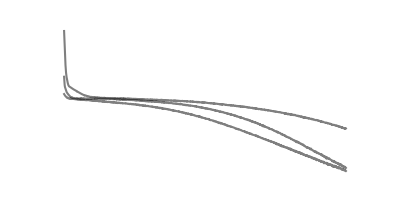
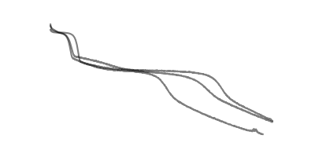
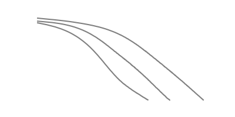
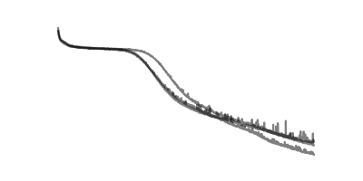
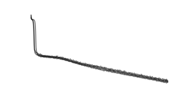
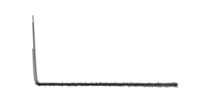

| Params | epoch | loss/train | loss/test | time/train | time/test | ||
|---|---|---|---|---|---|---|---|
| BelNet | 5.48e+03 |  | 1e+03 | 0.201 | 0.202 | 3.74 | 0.00228 |
| DeepONet | 5.87e+03 |  | 986 | 0.00177 | 0.00241 | 6.25 | 0.00248 |
| FNO | 505 |  | 438 | 0.000983 | 0.00101 | 3.19 | 0.00253 |
| Params | epoch | loss/train | loss/test | time/train | time/test | ||
|---|---|---|---|---|---|---|---|
| BelNet | 5.48e+03 |  | 1e+03 | 0.0416 | 0.824 | 34.5 | 0.00409 |
| DeepONet | 5.87e+03 |  | 1e+03 | 0.0434 | 0.176 | 55.1 | 0.00466 |
| FNO | 505 |  | 1e+03 | 0.493 | 0.498 | 62.3 | 0.00462 |